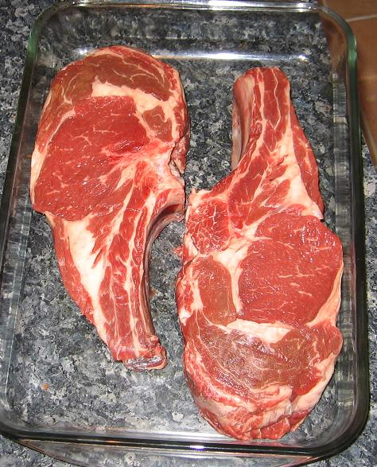
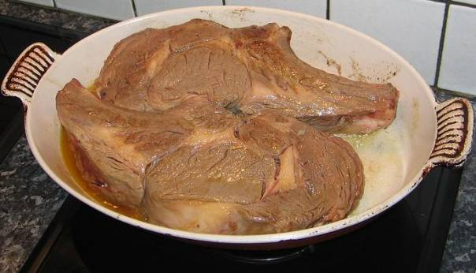
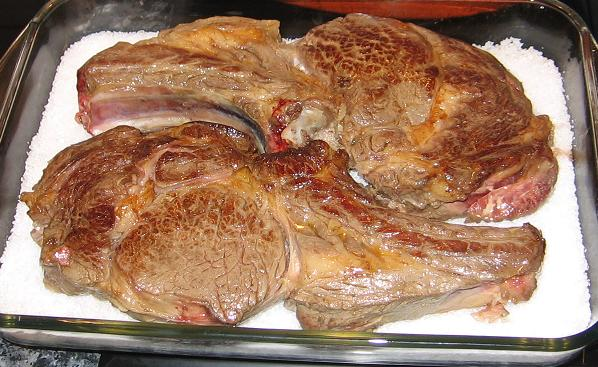
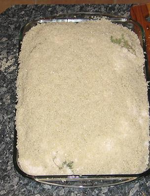
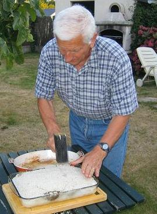
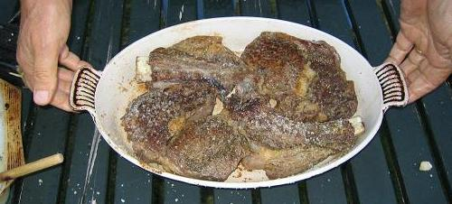

Ingrédients (pour 4 personnes) :
- 2 côtes de bœuf de chez Gilles Huet à Quiberon (de 500 g à 1kg par côte
suivant appétit)
- 4 à 5 kg de
gros sel de mer
- 100 g de beurre
salé
- une cuiller à
soupe de moutarde forte de Dijon
- 3 cuillers à
soupe d’huile d’olive des Mées
-
4 brins de thym
-
poivre du moulin

Préparation :
-
sortir les côtes une heure avant de les commencer à cuire
-
faire ramollir le beurre et le malaxer intimement avec la moutarde
-
donner quelques tours de moulin à poivre, faire un boudin dans un
papier d’alu
-
placer ce boudin au frigo
-
dans une grande poêle ou un grand plat, faire chauffer l’huile
-
y faire dorer vivement les côtes sur les deux faces, puis égoutter
-
dans un plat large et profond allant au four, mettre
une couche de 2 cm de sel
-
y déposer les côtes sur les quelles on pose les brins
de thym
-
recouvrir largement de gros sel et tasser
-
enfourner et cuire 45 minutes
-
au sortir du four, casser le croûte de sel, dégager
les côtes du maximum de sel
-
dégager le boudin de beurre-moutarde de son papier
d’alu et le découper en tranches
-
servir les côtes et le beurre moutarde séparément

Observations :
-
recette préparée le 17 août 2007 pour l’anniversaire de Françoise
Marie-Céline
-
nous étions 4 convives (Andrée, Michel, F. et moi) et il y avait 2200g
de côtes…
-
nous en avons eu beaucoup trop, mais avons néanmoins mangé une côte un
quart
-
c’était accompagné de pommes de terre en papillotes (cf. recette n°139)
-
le vin était un excellent Margaux de 2001
-
cet excellent plat
convient aux amateurs de viande de bœuf plutôt non saignante (pour les autres,
la préparation au barbecue est préférable)
-
ce plat
convient également à ceux qui aiment manger bien salé


